%%{init: {"themeVariables": {"fontSize": "23px"}}}%%
flowchart TB
L[LOR] --> A[LM crew and fuel]
L --> B["CM crew<br/>and SM fuel"]
L --> C["Moon arrival<br/>and departure"]
A --> D["EOR and<br/>Earth launch"]
B --> D
C --> D
Reasoning about Architectural Tradespaces
Systems Architecture · Chapter 15
Aykut C. Satici
15.1 Learning from a tradespace
What Chapter 15 adds
- Chapter 14 represented and evaluated architectures as interconnected decisions.
- Here we focus on structuring and viewing the results.
- A tradespace can reveal good candidates, influential choices, and fragile assumptions.
- The outcome can be a better decision process, not merely one selected architecture.
Route: basics → Pareto analysis → structure → sensitivity → decision sequencing.
15.2 Tradespace basics
An engine tradespace
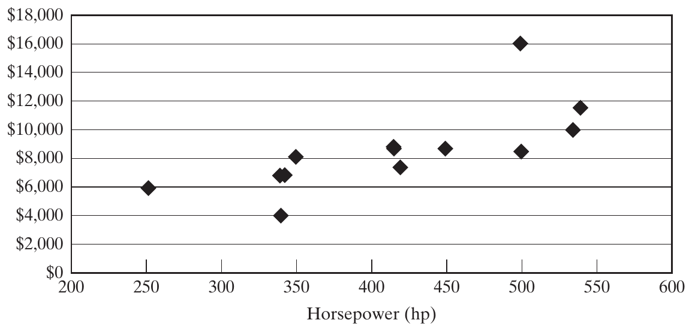
Each point represents an engine. More power and lower cost are the preferred directions. Source: Crawley, Cameron & Selva (2016), Fig. 15.1, p. 346.
Choosing metrics for a useful display
- Keep metrics transparent: fuel consumption is easier to interpret than an unexplained satisfaction score.
- Expose the two or three important tradeoffs to the decision maker.
- Make any aggregation and its weights visible.
- Use lower-priority goals to distinguish remaining candidates after the key tensions are understood.
A simple display should still lead back to the detailed goals.
Tradespaces and point designs
| Tradespace exploration | Point-design comparison |
|---|---|
| Many architectures | A few developed designs |
| Lower fidelity per architecture | Greater detail per design |
| A few key metrics | Many detailed metrics |
| Discover families and major tensions | Scrutinize individual alternatives |
These approaches support different stages of a decision.
Hybrid cars: critical and important goals
| Metric | Point design 1 | Point design 2 |
|---|---|---|
| Critical: CO₂ emissions | 128 g/km | 200 g/km |
| Supplier relationship score | 4/5 | 4/5 |
| Driver accommodation: males / females | 94% / 98% | 95% / 99% |
| Important: range | 200 km | 140 km |
| Regulatory compliance | Satisfies | Satisfies |
| Passenger capacity | 5 | 5 |
| Employee turnover | 2%/year | 2%/year |
| Fuel consumption | 4.2 L/100 km | 5.2 L/100 km |
Hybrid cars: desirable goals and screening
| Metric | Point design 1 | Point design 2 |
|---|---|---|
| Return on investment | 24% | 19% |
| Skidpad acceleration | 0.95 g | 0.82 g |
| Cargo volume | 1.1 m³ | 1.5 m³ |
| Sales price | $32,000 | $28,000 |
Discuss: if the minimum acceptable range is 160 km, which design remains? What if that limit is only a preference?
15.3 The Pareto frontier
Dominance: compare every metric
Using this chapter’s terminology, architecture A:
- Strongly dominates B if A is strictly better in every metric.
- Weakly dominates B if A is at least as good in every metric and strictly better in at least one.
The Pareto frontier contains architectures that no other candidate dominates.
Always state whether each metric is to be minimized or maximized.
Worked example: three engines
| Engine | Power ↑ | Cost ↓ |
|---|---|---|
| A | 330 hp | $4,000 |
| B | 250 hp | $6,000 |
| C | 420 hp | $7,500 |
- A dominates B: more power, lower cost.
- A and C trade power against cost: neither dominates the other.
- The frontier is {A, C}.
Illustrative classroom values; the dominance pattern follows Fig. 15.2.
Utopia, distance, and the shape of the front
- Utopia combines ideal values for every metric, whether jointly attainable or not.
- Locate the direction of improvement before reading the front.
- Distance to utopia depends on units, normalization, and preferences.
- A Pareto front need not be smooth or convex.
- A knee suggests a change in marginal tradeoff; it does not select the architecture for us.
The GNC example: function and scope
A guidance, navigation, and control system:
- Measures the vehicle’s current state.
- Determines the desired state and control action.
- Commands actuators to influence the vehicle.
Assume adequate functional performance; compare mass and reliability.
The chapter studies the sensor–computer portion of a larger sensor–computer–actuator system.
GNC decisions and baseline assumptions
| Decision or assumption | Model choice |
|---|---|
| Number of sensors / computers | 1–3 of each |
| Type of each component | A, B, or C; increasing mass and reliability |
| Connections | Choose the sensor–computer topology |
| Connectivity rule | No isolated component |
| Baseline connections | Massless and perfectly reliable |
| Mixed component types | No initial penalty |
The book reports 20,509 valid architectures.
Examples of valid connection topologies
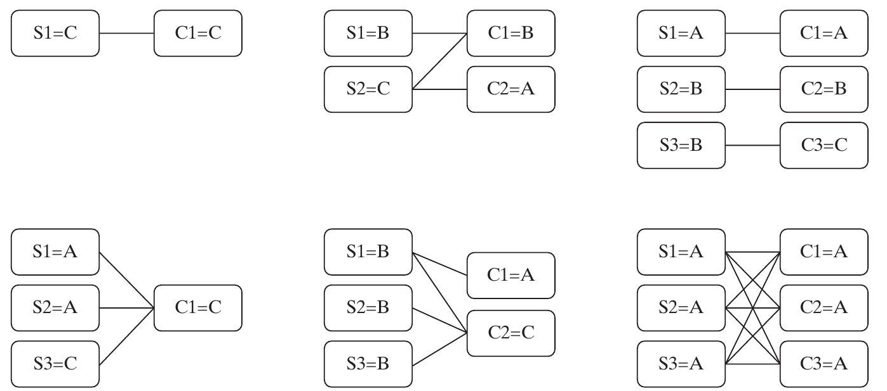
S denotes a sensor and C a computer; the value after = is its type. These are connectivity sketches. Source: Crawley, Cameron & Selva (2016), Fig. 15.3, p. 350.
Reliability expressed as “number of nines”
For reliability \(R<1\), define
\[n=-\log_{10}(1-R),\qquad R=1-10^{-n}.\]
| Reliability | Failure probability | Number of nines |
|---|---|---|
| 0.999 | \(10^{-3}\) | 3 |
| 0.993 | 0.007 | ≈ 2.155 |
| 0.99999999 | \(10^{-8}\) | 8 |
One additional nine means ten times less failure probability.
The GNC mass–reliability tradespace
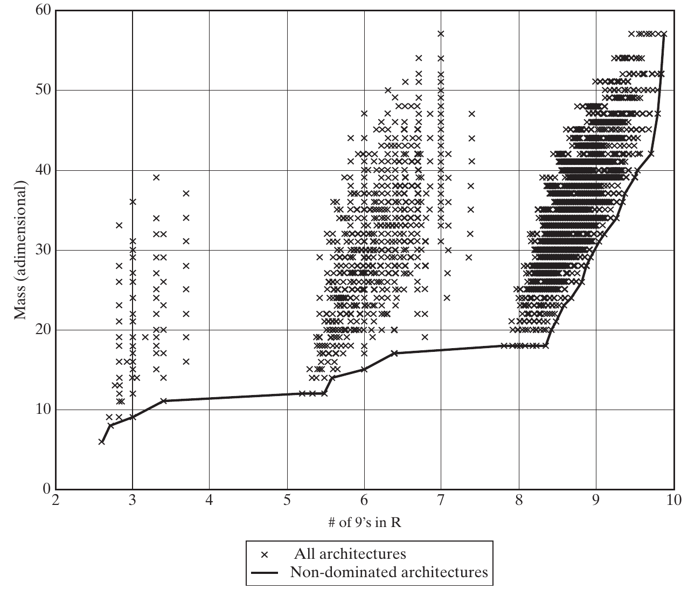
Mass is dimensionless; reliability increases to the right. The line marks non-dominated outcomes. Source: Crawley, Cameron & Selva (2016), Fig. 15.4, p. 351.
Examining the high-reliability frontier
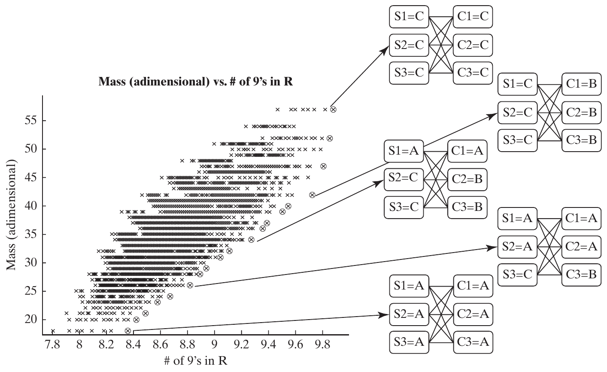
The zoom includes the neighborhood of the eight-nines threshold and the frontier toward higher reliability. Source: Crawley, Cameron & Selva (2016), Fig. 15.5, p. 352.
Why retain a fuzzy Pareto frontier?
A fuzzy frontier retains some slightly dominated candidates near the front.
Reasons include:
- Uncertainty or error in the metric estimates.
- Benefits in omitted metrics or constraints.
- A useful member of an architecture family.
- Greater robustness to changes in assumptions.
Nominal non-dominance is a filter, not a final selection rule.
Mining a feature on the frontier
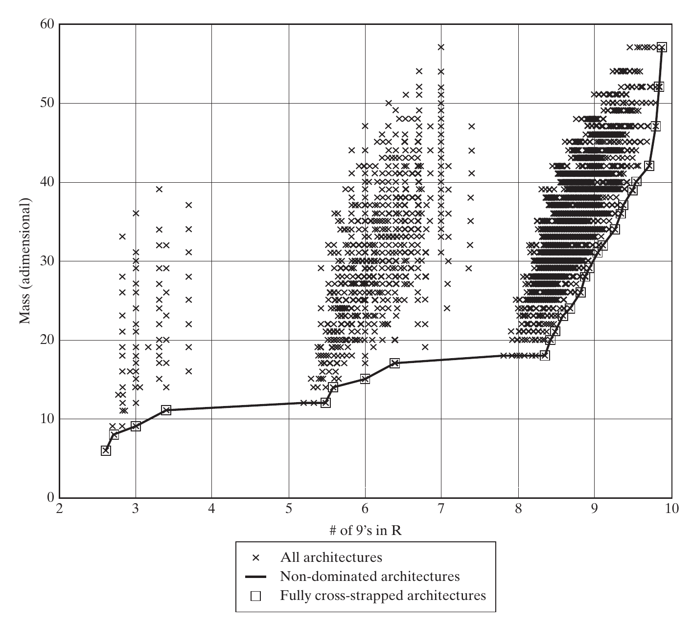
In the baseline model, every non-dominated architecture is fully cross-strapped. Source: Crawley, Cameron & Selva (2016), Fig. 15.6, p. 353.
Feature frequencies: keep denominators straight
| Feature | Share of all architectures | Share of Pareto front | Share of feature group on front |
|---|---|---|---|
| Fully cross-strapped | 2% | 100% | 7% |
| Homogeneous | 7% | 33% | 1% |
| ≥1 type-C sensor | 59% | 56% | 0.1% |
Three different questions: \(P(F)\), \(P(F\mid PF)\), and \(P(PF\mid F)\).
Reported percentages from Table 15.2.
What the feature frequencies imply
- Cross-strapping: strongly enriched on the front; necessary in this baseline, not sufficient.
- Homogeneity: overrepresented, but most frontier architectures are not homogeneous.
- At least one C sensor: 56% on the front versus 59% overall; little enrichment.
Feature enrichment suggests where to investigate. It does not establish a universal design law.
Computing the Pareto front
For each feasible candidate A:
- Compare A with other candidates in all metrics.
- If some B is no worse in every metric and better in at least one, mark A dominated.
- Keep candidates for which no such B exists.
A direct pairwise method costs \(O(MN^2)\) for \(N\) architectures and \(M\) metrics.
Non-dominated sorting
- Rank 1: the original Pareto front.
- Remove rank 1 and compute the remaining front → rank 2.
- Repeat until all candidates have ranks.
High ranks indicate domination by successive layers of alternatives.
Repeated naive filtering can cost \(O(MN^3)\); retaining dominance relationships can reduce repeated work at a memory cost.
Practice: assign Pareto ranks
| Architecture | Mass ↓ | Reliability nines ↑ |
|---|---|---|
| A | 4 | 6 |
| B | 5 | 8 |
| C | 6 | 9 |
| D | 5 | 5 |
| E | 7 | 7 |
| F | 8 | 4 |
Classroom data. Identify the first front, remove it, and repeat.
Two ways to build a fuzzy filter
| Method | Example rule | Limitation |
|---|---|---|
| Pareto rank | Keep ranks 1–3 | Dense regions can assign poor ranks to nearby points |
| Distance from front | Keep points within a normalized tolerance | Result depends on scales and distance definition |
A 10% distance threshold is an example in the chapter, not a universal engineering tolerance.
15.4 Structure of the tradespace
Clusters in the GNC tradespace
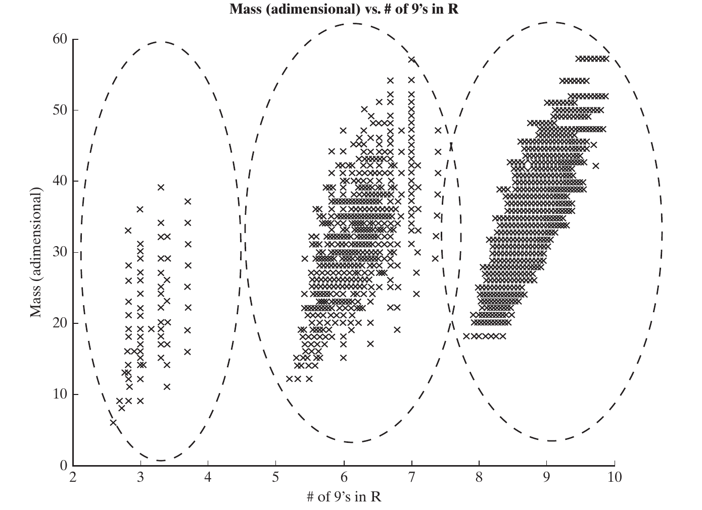
Clusters group similar outcomes; the architectural cause still needs to be identified. Source: Crawley, Cameron & Selva (2016), Fig. 15.7, p. 356.
Explaining clusters with an emergent property
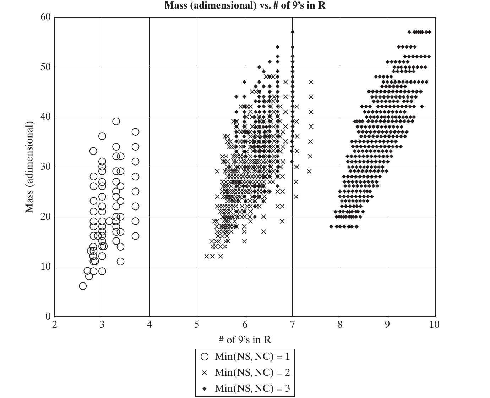
The feature min(NS, NC) helps explain the three reliability regions. Source: Crawley, Cameron & Selva (2016), Fig. 15.8, p. 357.
A useful cluster-analysis workflow
- Identify a concentration or gap in metric space.
- Mark points by a decision choice or derived architectural feature.
- Check whether the marked groups explain the pattern.
- Inspect exceptions and repeat under changed assumptions.
A family requires evidence of similar architectures and outcomes, not just nearby plotted points.
Strata: repeated values of one metric
Stratification: points form horizontal or vertical bands because one metric takes only a few distinct values.
- A discrete objective, such as the number of projects, can create strata.
- Continuous quantities can also have discrete attainable sums.
- The baseline GNC component choices produce 49 mass values.
- Within a mass stratum, retain the greatest reliability; equal-score architectures can still tie.
One stratum: AAA–AAA
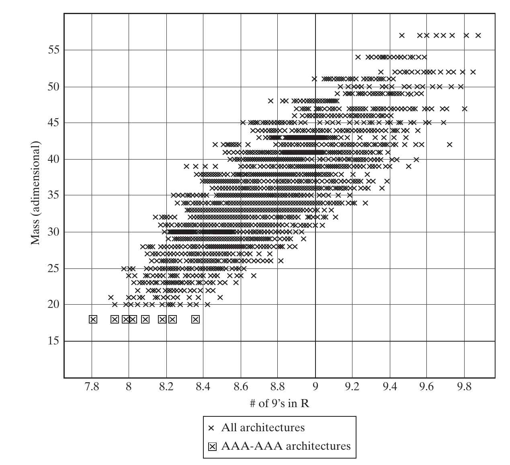
Fix the components and vary their connections: reliability changes while baseline mass stays fixed. Source: Crawley, Cameron & Selva (2016), Fig. 15.9, p. 358.
15.5 Sensitivity and robustness
Test the assumptions behind the result
A posteriori sensitivity analysis reruns the model under alternative assumptions.
For the GNC example, vary:
- Connection mass.
- Penalty or benefit for dissimilar components.
- Component masses and reliabilities.
Compare frontier membership, architectural features, and metric values across scenarios.
Adding mass to connections
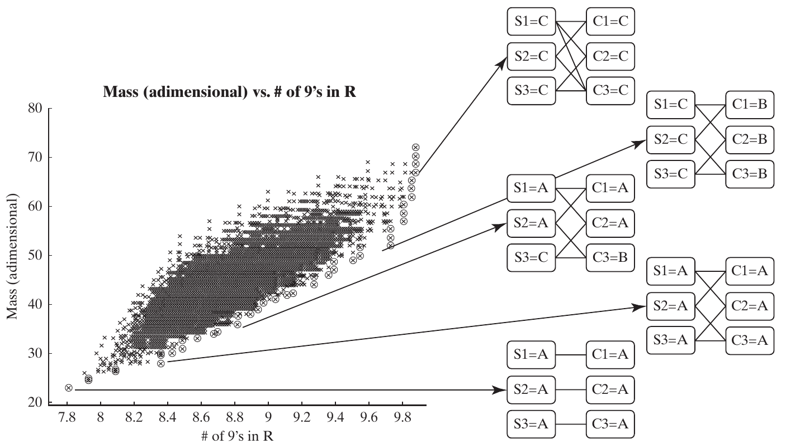
Published scenario: connection weight = 5/3; dissimilar-component penalty = 0. Source: Crawley, Cameron & Selva (2016), Fig. 15.10, p. 359.
Penalizing dissimilar components
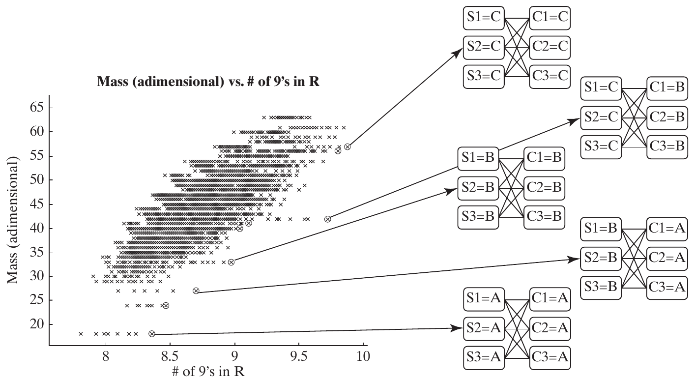
Published scenario: connection weight = 0; dissimilar-component penalty = 9. Source: Crawley, Cameron & Selva (2016), Fig. 15.11, p. 360.
Is cross-strapping a robust finding?
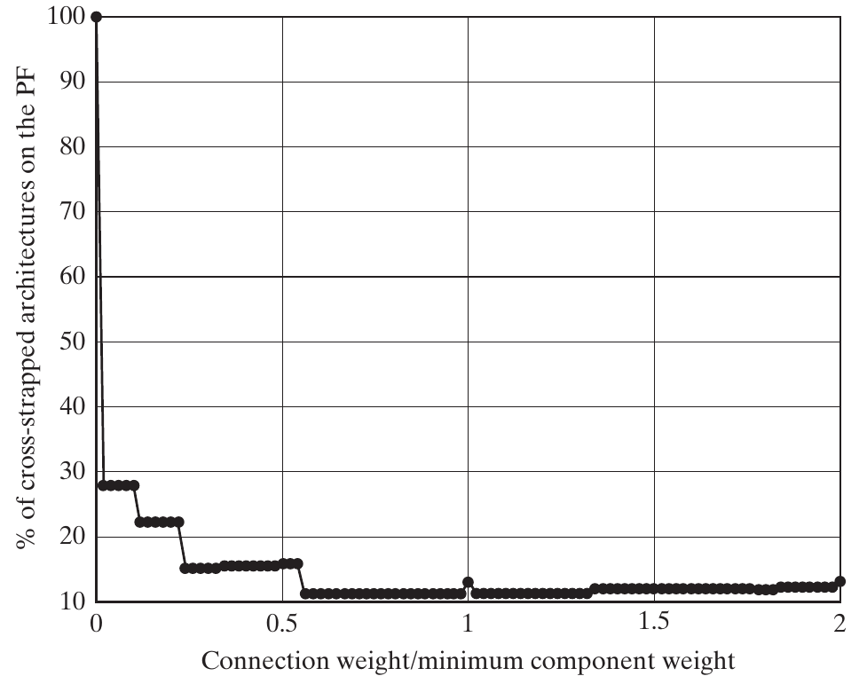
At zero connection mass, the share is 100%; at a ratio of 0.02, the chapter reports less than 30%. Source: Crawley, Cameron & Selva (2016), Fig. 15.12, p. 361.
Three regions of diversity sensitivity
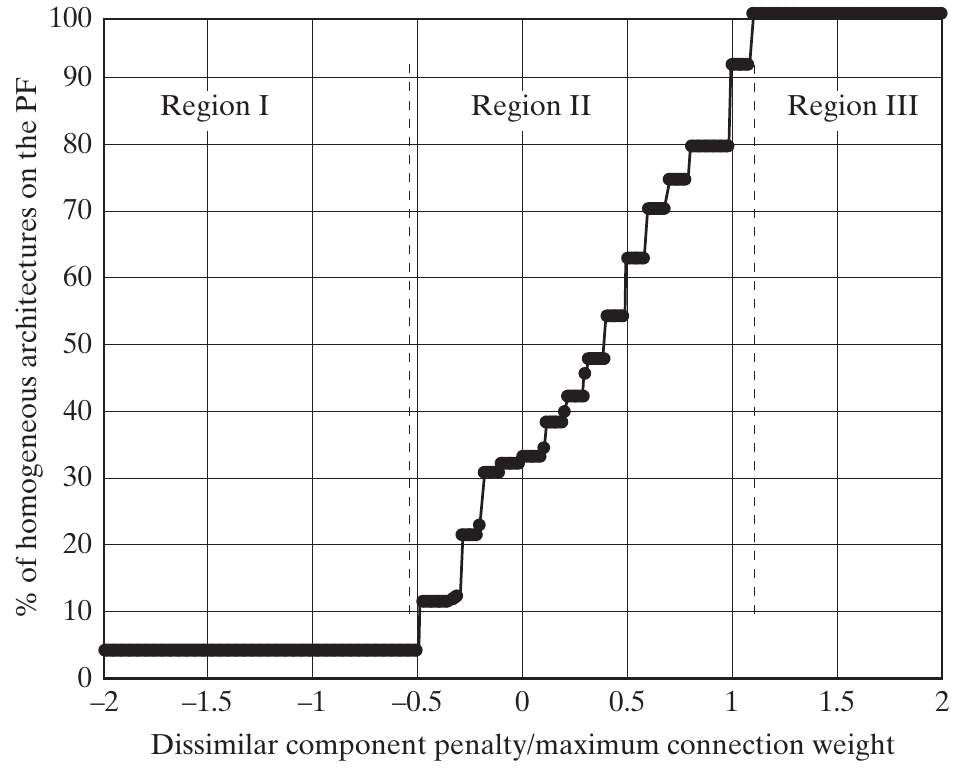
Low penalty: few homogeneous choices. Middle region: strong sensitivity. High penalty: all frontier choices homogeneous. Source: Crawley, Cameron & Selva (2016), Fig. 15.13, p. 362.
The cost of scenario enumeration
A full grid multiplies the numbers of input settings.
- Connection weight 0–2 by 0.1: 21 settings.
- Dissimilar-component penalty −2–10 by 1: 13 settings.
- Additional component-property alternatives multiply these again.
Even these first two inputs require 273 model runs.
Use Latin hypercubes or orthogonal arrays to plan a smaller, informative scenario set.
Robustness and adaptability
Robustness: maintain useful performance despite variations.
Adaptability: change the system to respond to new conditions.
Consider variations in:
- Architectural inputs and assumptions.
- Design and implementation.
- Technical, market, and operating environments.
A narrow nominal optimum can be fragile if it depends on an immature technology.
Measuring performance across scenarios
For each architecture, examine:
- Mean metric values across the selected scenarios.
- Fraction of scenarios meeting a stated threshold.
- Frequency of membership in the fuzzy Pareto frontier.
- Scenarios with unacceptable outcomes.
Report both the result and which scenarios were included.
Weighting scenarios by probabilities
The chapter gives this connection-weight illustration:
| Scenario | Input value | Probability |
|---|---|---|
| Optimistic | 0.05 | 0.20 |
| Best guess | 0.20 | 0.60 |
| Pessimistic | 0.50 | 0.20 |
\[\mathbb{E}[M(a)]=\sum_s p_s\,M(a;s),\qquad \sum_s p_s=1.\]
Use probabilities only when there is a defensible basis for them.
Worked example: average and threshold
Illustrative metric outputs under the preceding scenario probabilities; lower is better.
| Architecture | Optimistic | Best guess | Pessimistic |
|---|---|---|---|
| A | 10 | 14 | 26 |
| B | 12 | 15 | 20 |
\[\mathbb{E}[M_A]=15.6,\qquad \mathbb{E}[M_B]=15.4.\]
For the requirement \(M\leq20\): A meets it with probability 0.8, B with 1.0, under these scenarios.
Monte Carlo and practical scenario design
- Assign distributions to uncertain inputs and simulate resulting outcomes.
- Examples include demand, material prices, and enabling-technology performance.
- Accurate tail estimates can require many evaluations.
- Input distributions may themselves be difficult to justify.
When full sampling is impractical, choose scenarios that span the important ranges and interactions.
15.6 Organizing architectural decisions
Two meanings of a high-impact decision
| Impact | Question | Measure |
|---|---|---|
| On other decisions | How much does this choice constrain or couple other choices? | Connectivity |
| On system outcomes | How much do important metrics change across alternatives? | Sensitivity |
A decision may be high on one measure and low on the other.
Counting connectivity in Apollo
Count logical constraints that involve each decision:
| Decision | Constraints | Degree |
|---|---|---|
| LOR | b, c, e, f | 4 |
| LM crew | d, e | 2 |
| EOR; Earth launch; Moon arrival; Moon departure; CM crew; LM fuel | One each | 1 each |
| SM fuel | None | 0 |
This is logical connectivity, not total physical or metric interaction.
Connectivity depends on model formulation
Apollo can be represented as:
- Five binary mission decisions + three compatibility constraints, or
- One mission-mode decision with 15 feasible alternatives.
The second representation hides the internal compatibility rules inside its alternatives.
Inspect whether a high degree reflects the system or your chosen decomposition of decisions.
Metric couplings need a separate analysis
- Decisions can interact through a metric even without a logical constraint.
- Apollo fuel and mission mode jointly affect IMLEO.
- Examine combinations of alternatives, not only one decision at a time.
- Reasonableness constraints can add further connections if explicitly modeled.
A constraint DSM alone does not capture every architectural interaction.
Binary main effect
For decision \(x_i\in\{0,1\}\) and metric \(M\):
\[ME_i=\underbrace{\frac{1}{N_1}\sum_{x:x_i=1}M(x)}_{\text{mean with alternative 1}}- \underbrace{\frac{1}{N_0}\sum_{x:x_i=0}M(x)}_{\text{mean with alternative 0}}.\]
- The sign states the direction of the difference.
- The magnitude describes an average difference in metric units.
- Both alternatives must occur in the analyzed set.
Worked example: main effect and interactions
Classroom mass values for two alternatives in two contexts.
| Other design context | Decision = 0 | Decision = 1 | Difference |
|---|---|---|---|
| X | 8 | 10 | +2 |
| Y | 12 | 22 | +10 |
\[ME=\frac{10+22}{2}-\frac{8+12}{2}=16-10=6.\]
The average effect is 6, but its size depends on the other design context.
Sensitivity for several alternatives
Let \(K\) be the available alternatives. Compare each group with its complement:
\[S_i=\frac{1}{|K|}\sum_{k\in K}\left|\overline{M}_{x_i=k}-\overline{M}_{x_i\ne k}\right|.\]
- Nonnegative, with the same units as \(M\).
- Each alternative contributes one absolute mean difference.
- The definition requires nonempty comparison groups.
With two alternatives, this averaged definition gives \(S_i=|ME_i|\).
Worked example: three alternatives
Equal-size classroom groups for a metric to minimize.
| Alternative | Values | Group mean | Complement mean | Absolute gap |
|---|---|---|---|---|
| A | 8, 12 | 10 | 18 | 8 |
| B | 12, 16 | 14 | 16 | 2 |
| C | 20, 24 | 22 | 12 | 10 |
\[S=\frac{8+2+10}{3}=\frac{20}{3}\approx6.67.\]
This is not the range of group means, which is \(22-10=12\).
Which architectures enter the sensitivity calculation?
| Analyzed set | Benefit | Caution |
|---|---|---|
| Entire tradespace | Broad exploration of driving decisions | Includes poor and possibly irrelevant regions |
| Fuzzy frontier | Focus on plausible candidates | Some alternatives may be rare or absent |
| A selected region | Answers a local decision question | Conclusions are conditional on that region |
State the metric, alternatives, subset, and weighting convention.
Apollo: the decision-space view
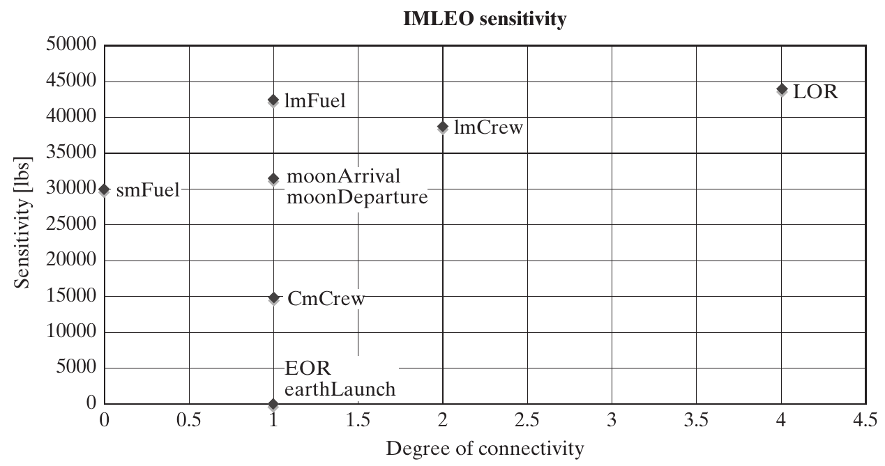
Each point is a decision. Horizontal axis: connectivity. Vertical axis: IMLEO sensitivity in pounds. Source: Crawley, Cameron & Selva (2016), Fig. 15.14, p. 367.
Four quadrants for organizing decisions
| Weakly connected | Strongly connected | |
|---|---|---|
| High metric sensitivity | II: analyze relatively independently; high priority | I: address first; shapes many later options |
| Low metric sensitivity | IV: parallel or later work | III: resolve after sensitive choices, with coordination |
“High” and “low” are contextual judgments, not universal thresholds.
Coupling and sequencing principles
- Address decisions with high sensitivity and high connectivity early.
- Combine strongly coupled choices into a joint trade study.
- Run weakly coupled studies in parallel where practical.
- Coordinate shared assumptions and metric budgets across studies.
The aim is to reduce rework while preserving important interactions.
Apollo: organizing the trade studies
Adapted from Fig. 15.16: coordinate the middle studies; preserve all maneuver constraints.
Decision structure informs team structure
- Teams working on tightly coupled choices need frequent coordination.
- A joint trade study should include the people responsible for the interacting decisions.
- Weakly coupled work can proceed with fewer synchronization points.
- A provisional decision hierarchy is useful even before a complete numerical model exists.
Refine the decision model as you learn
- Consider removing low-impact, weakly connected decisions from the exploratory model.
- Add detail or split a decision when a coarse choice drives the results.
- Simplify expensive metrics that do not distinguish architectures.
- Improve low-fidelity metrics that control the recommendation.
Check for missing stakeholder value before discarding a decision or metric.
Architectural competition and dominant designs
The chapter describes an industry pattern:
- Competing architectures explore different ways to deliver value.
- A dominant architecture can emerge.
- Innovation concentrates on components and processes.
- A new architecture can remove limits of the old one and disrupt that pattern.
Both established and unsettled architectures require systems thinking and judgment.
15.7 Synthesis and practice
An integrated tradespace-analysis workflow
- Inspect goals, feasibility, metric directions, and model scope.
- Find the Pareto and fuzzy frontiers.
- Compare feature frequencies; investigate clusters and strata.
- Test conclusions across scenarios.
- Analyze decision connectivity and metric sensitivity.
- Organize studies and refine the model before selecting.
Class discussion: choose the next study
Your team observes:
- Every nominal frontier design uses complete cross-strapping.
- Its connection-mass estimate is uncertain.
- A low-mass candidate depends on an immature sensor.
- Sensor type and topology interact strongly in reliability.
Propose a sensitivity study, a robustness question, and a joint decision study. Explain each choice.
Exit ticket
- Why does “on the Pareto front” not mean “best architecture”?
- What is the difference between a cluster and a stratum?
- Why does a high feature frequency on the front not prove robustness?
- What does the normalized two-alternative sensitivity equal?
- Which decisions should be studied jointly, and which can proceed in parallel?
Reference and next chapter
Crawley, E., Cameron, B., & Selva, D. (2016). System Architecture: Strategy and Product Development for Complex Systems. Pearson. Chapter 15, pp. 345–372.
The chapter’s references connect these ideas to fuzzy Pareto frontiers, non-dominated sorting, experimental design, and architecture-decision analysis.
Next: Chapter 16 formalizes architecture optimization problems and methods for solving them.

← Course Home · Systems Architecture · Chapter 15